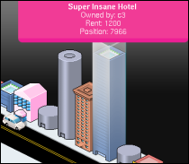

Real Estate Hackers Prevailing? #

The new Rails-based board game llor.nu opened a few days ago. If you’ve hopped on recently, you’ve probably noticed that the game is dominated by a steep curve of players who’ve crossed the $5,000,000 mark. One of these players (alias: c3, ranked: no. 3) has been accused of hacking the site by the gamemaster Michael Buffington, likely by scrounging through the source browser for holes (err, no, the hack started before the code came out…) in the API. And, since the site is driven by Ajax calls, the browser becomes a terminal for poking the exposed nerves.
The really fun part of this is that when c3 was called on it, he responded by posting the following Ruby code in the forums:
@agent = Agent.new( :direction => :wide, :building_preference => :super_insane ) @agent.run @agent2 = Agent.new( :direction => :high, :building_preference => :crappy ) @agent2.run
So what is this? Code from the exploit? Browing the llor.nu code, I’m not finding any Agent model class. Regardless, the idea of flashing a Ruby snip like a flick of the switchblade is pretty radical! In all, it makes me wonder if multiplayer games can open-source like this. If it’ll always suffer due to the intense scrutiny of the players.
I think the killer advantage here is that if the saturation of llor.nu bugs you, it’s actually pretty simple to erect your own, you know? ‘Cause I mean that street is becoming a pretty long and daunting ride for a newb.
Update! Turns out the code is from c3’s bot. And a peace accord was struck! It works for the masses now. See the comments.
Dreamer3
I think it’s code from his Ruby automatic playing bot he wrote, but I could be mistaken. :-)
c3
Heh. Actually, i’d done all this before he released the source code, and inspired by your work with mousehole, wrote an agent in a bastardized mix of JS and ruby to play the game automatically for me (the ‘agent’).
Then, after he released the source (after much heckling), I became one of the main contributers to the project along with Dreamer, patching all the little holes I’d found and refactoring the hell outta the code.
Michael Buffington
Also worthy of note – c3 has admitted to me readily that there is a bot, and at first I was sort of bent out of shape (as much as I could be – he made the bot and stopped using it before the game went OSS , and then he became a core contributor), but after thinking about it – solving the problems that bots can introduce is my responsibility. I can do things like throttle API calls, or detect patterns, or whatever.
However, I must ultimately make it so that if a bot gets past my preventative measures, that it doesn’t kill the game for new players. That’s slightly more difficult, but still possible.
Also, I need to say, the bot has been really handy for a number of reasons. While it traveled the map, it was paying players (good) but more importantly, it quickly helped point out imbalances in the economy. Having a super player is super valuable in finding flaws, and surely the bot will be introduced as a system tester later, hopefully available as part of the current source.
why
c3: Oh, man. So is the bot in the repository?
Michael Buffington: So when the bot pays a player does it appear on the screen as well? Does it have a visual presence? Or does the account just jump?
c3
Yeah, that was kind of the whole point.
The bot actually played the game as I would; while initially, it exploited a hole in the code (the dice roll and the actual move were separate ajax calls, so you could keep hitting ‘roll’ until you got a nice number) eventually we patched all those little things, and it was more fun to start writing behaviours for the little guy.
Trixter
I’ll happily admit to having used a bot to reach #2.
Rails generated html is seriously nice to scrape and react to.
Ruby makes it seriously easy to forget about coding to only have to focus on strategy.
Michael, if you want the source of the bot, you know where to find me.
Michael Buffington
Trixter: Submit it as a patch and I’ll work on putting it into the project. Same with you c3 (or shame on your family name).
c3
why: Nah, the bot’s not in the repo. But, because it played the game with ajax, it appeared just like anyone else.
why
If you kids put your bots out, I’ll cook up a MouseHole script to manage them all. I’d really like to play llor.nu, but I kinda want to drive straight to my first building without so much hitting the brakes. It is a very pretty game, Michael.
Danno
I love bots in massive games.
The best are the ones that talk with, and infuriate, other players.
Michael Buffington
Thank you why. It’s good to hear from one as creative as yourself. Perhaps the game could use some of your touch, come to think of it. I’ve been wanting something like The Rare Squirrel of Dubious Origins that perhaps helps you steal another player’s building, but surely there could be foxes in the game as well.
<|:{
Isn’t it cooler that a game can be hacked by any of the players? There are plenty of boring, static games out there, but how many games are there where the rules of the virtual world can actually be changed by the players to suit their own needs?
Micheal, what if you look at this as a feature rather than a bug? This sort of hackable game would allow players to match their Ruby-wits against each other as opposed to their realestate trading prowess. If it’s a choice between Ruby-wits and realestate (virtualestate?) prowess, I’ll choose a game of Ruby-wits every time.
BDR
That entirely depends on the audience. What you are suggesting might appeal to the coding audience, but not to the average player who’s just looking for something fun to do in their spare time. I know I would leave the game behind if it became code-oriented rather than game-oriented.
Kevin Clark
Maybe there could be a seperate game, bots only, where people could compete to come up with the most successful bot?
<|:{
BDR : What if it could somehow be made so that users are motivated to learn enough Ruby code to participate (without really realizing it)? Maybe even little coding hints could be dropped from above? The hints could be rewards for reaching certain goals, etc.
There seem to be lots of possibilities. Maybe it could be made ‘Matrix-like’ such that you have a sort of virtual, projected world that most players think is the ‘real world’, but in reality there’s this matrix underlying everthing and that matrix is Ruby code. The most adept players would be those who can switch back and forth between the two (basically, this is what happened when c3 hacked the game, he became the Neo). Call it Plato’s VirtualEstate Cave! or maybe Ruby’s Cave?... or even llor.nu
p l a y e r s . e a c h { | p l a y e r | i f p l a y e r . c l a s s = = A g e p l a y e r . p r i v i l e d g e = M e n d i f p l a y e r . s t r e n g t h > A g p l a y e r . l i f e s p a n = \ p l a y e r . l i f e s p a n * ( 1 .
why
Tetris and then one day you look up and all your bricks have stacked in a new Oracle product that wasn’t supposed to be built for at least five years and you can sell it back to Oracle, saving everyone a noteworthy amount of time.
MenTaLguY
Re: everything.
Whoa. Only in Ruby.
Michael Buffington
<|:{: (note, I feel weird addressing you with mere punctuation, but here goes) – the idea from the very beginning was that the current interface to llor.nu is just that – an interface. An API will be widely available, and people will be encouraged to do whatever they like. At some point I’ll have to figure out how to balance the “super interface” issue that gives smart programmers some kind of edge with the stay at home mom’s or office workers who simply want something fun to do in some spare time.
Also, regarding the “matrix like” thing – I’m very much a fan of The Street as depicted in Neal Stephenson’s Snow Crash, and I think the core contributors, while perhaps not as zealous as me, are understanding that you can have things like Square > Building > Hotel > Super Insane or Square > Building > Arcade > 80’s Classics or whatever. Because it’s Ruby, we should be able to do that right? A square shouldn’t just be able to have a building, and a building shouldn’t just be a hotel. I dream about the day when someone can do something entirely unique and add it to the game, and it makes the entire thing all the more fun.
That kind of thing supports my ultimate goal – this isn’t about fancy programming. It’s about squeezing a lot of fun out of something simple and elegant. Fancy programming can make that more possible, but my ultimate aim is to get the game to be so much fun that the entire Internet has real estate in llor.nu of some kind, and it stops the entire Internet from working for at least 20 minutes a day.
BDR
What you’re suggesting is still a very different game with a very different focus and a very different potential audience. That’s not to say it wouldn’t be fun and that I might not try it, but it will not be the same sort of game as what it is right now.
Kevin Wallace
I’ll admit I wrote one too, but in Python/Twisted, not Ruby. I haven’t used it for a week or so, but I also haven’t lost the top spot in the high scores yet.
I’m worried that an API will make it easier for people to give themselves an unfair advantage like this. It’ll be interesting to see how you address this.
I’m willing to contribute the source of my bot to the project. Even though it’s not in Ruby, are you interested in it, as well?
BDR
In light of Michael’s post, I should clarify my last statement (though it still stands). Right now, it has a very limited focus as a light, casual real estate game with the object being to get the most money. When you take away these limitations, however, you really change the character of the game, and end up changing also the type of audience attracted. The market for this stuff isn’t going to stay the same when you make the focus less on building hotels and making money and more on lots of other things. The other problem, is that since you plan on going eventually with an MMO , is the eventual ravages of griefers. These people, armed with the ability to manipulate the code, will have a potentially disastrous means to ruining the experience of the other players by exploits, bugs, or just plain altering the coding to allow for, say, a virus to be distributed, killing the experience. MMO ’s are not easy things to handle by the very fact that they allow for so many people.
BDR
..Also, in order for your dream of the entire Internet to stop for 20 seconds to check llor.nu, you’re going to need bigger and better servers. ;P
Michael Buffington
BDR : you’re right, on all counts. The game should and always will maintain a level of simplicity similar to what it has – it has to be enjoyable. But I think you can maintain that simplicity and allow for custom models, as long as the custom models have to adhere to certain unbreakable rules.
And I don’t want the entire Internet to show up at once. Please line up in an orderly fashion. No shoving, and be polite once you’re inside. Thank you Internet.
Jason Lettermough
Fancy stuff
crappytheclown
interesting stuff….anyone considering that DotCom is doing the same thng as c3 has??? He’s gone to the top in 3 days and at one point yesterday when i was rolling and checking the tops list and everything, he doubled his buildings from over 300 to over 600…
Trixter
Weird thing is, DotCom’s revenue doesn’t seem to be in line with the number of building he’s got. He’s got very little cash in hand and his net worth doesn’t climb as much as the other players.
The fact he’s got little cash means he’s either rolling a lot while managing to avoid the quickies and the 5ks, or that he’s reinvesting his money immediately.
I don’t remember seeing him in my last transactions, so I doubt he’s rolling much. If he had been reinvesting, his network would climb faster than, say, mine.
So right now I’m tempted to say there’s something fishy going on with that guy, much fishier than simply playing with a bot.
crappytheclown
yep thats wut i just said!!....lol
BDR
I do think there is something rather peculiar with DotCom as well, he came up right out of nowhere and just shot up beyond me and everyone else very, very quick. I was able to shoot past people on the lower half of the top 20 only because I was constantly rolling and looking for lucky 5’s and spending practically the entire day on the game for two days.
But enough about that (though it is serious if he is using something to boost his performance), I’m glad to know you’re keeping these issues in mind, and I do think that the custom models would be cool. I just also don’t trust my fellow Internet fiends to do the right thing 100% of the time, so I feel caution can’t be emphasized enough. Also, (not to discourage you by any means) even if only .0003% of the Internet shows up at your door daily, you’re still going to need bigger and better servers (yes, plural.. don’t believe me? Take a look at www.kingdomofloathing.com, it has three [and actually has either gained a fourth recently or is working on a fourth]).
crappytheclown
yep…there’s plenty of lag on the game, especially when you want to view your buildings (though i don’t think thats because of the immense amount of new users)... new servers will be needed. Look at the problems there were when tons of new users signed up at the beginning of the week, and your not even advertising it. These peeps came from blogs that acknowledged the site…
Michael Buffington
I talked to DotCom last night, and I’m convinced he’s not knowingly doing anything wrong. He described what he’s doing to me, and I actually think he’s hitting a bug that gets him 5k more often then he should, which he’s immediately reinvesting. I’m looking into it, but I’m sure he’s not using a bot, as he’s not paying out rent like bots normally do.
BDR
Well, that’s certainly peculiar then if it’s true. Really, though, there’s other things that are slightly more pressing than fixing a bug like that (which seems to only be working for him, anyway..), such as the forums and the dev site having gone down.
Ms. DOTCOM
OMG ! You guys are Nuts. I just reinvest my 5000 as soon as I get it to build up. I DO NOT have a bot or a hack. Just stop the whining already! I played 12 hours straight , and just used my duckys to avoid paying high rent. If someone wins you guys cry like BABIES ? And I am Not a Dude , I am female. So, lets grow up and don’t act like a baby. I spoke with Michale about this already. I am not going thru this again.
Trixter
DotCom, don’t get us wrong, we’re not crying about it.
The game is in beta, and a few of us are interested in getting the game more interesting for everyone. Be it newbies, more seasonned players and even bots.
It may sound nuts to you, but I’ve posted a couple of tickets suggesting ways to make sure my pattern of playing won’t affect the other players in the future. If that means dropping off the top 20, I’m happy about it since it will make the game more fun for everyone.
What’s allowed you to reach #1 so quickly is not in the best interest of the rest of the players, so we’re all interested in making sure you’re not able to exploit a bug (intentionally or not).
If that’s being nuts, I’m a very happy nutcase.
Ms. DotCom
well at first I let it go ….but a few just keep adding it over and over. I have paid you 1200 at a shot a few times…... but, I am not going off. I have sent Miachael my bank history and such. I am paying rent as well. I understand it’s BETA and if I were doing something wrong THAT would be sad. Like I said , when I have a profit….I spend it all on rent and building to my property.
Donald Trump
How much do you want for the whole city?
Michael Buffington
So, Ms. DotCom, your name is cleared. There was a bank error in your favor, essentially, and it was such a nice one that you essentially had unlimited funds. Sorry that it happened and that people (so hastily) made the assumption that you were either not human or cheating.
crappytheclown
what’d you do with DotCom???
Dave
rolls eyes
On another note, I just wish I could play the game without having to fill in 7 pieces of registration data.
Michael, is there a demo account? Call me lazy, but I tried filling in all the lines with the same default details that I use on other sites and never received a confirmation email.
Perhaps if you let people register and login immediately – allowing the email to “confirm” the registration at a later date – then people with ADD (or just severe It Must Just Work Right Now syndrome) like me won’t have to pass on it.
misuba
Having now tried the game, you guys should just say on the front page that the way one plays the game is by writing a bot. Anything else is deathly dull.
BDR
It didn’t use to be that way, unfortunately the way the new player spawning is set up, plus the massive influx of new people all around the same time currently makes it that way. Patience is key, and with any luck Michael and the rest of them will fix the major issues that are hurting the experience.
Timmy
It is pretty apparent that the only way to play this game is by writing a bot or finding a hole. Otherwise most of the time is spent paying out 1200 every 9 or 10 rolls to those who did. Not fun.
zimbatm
Michael Buffington : some other online games use a captha randomly to test if the player is a real-one (eg. vendetta.de / .fr)
disgruntled player
Signed up, rolled the die maybe twenty times, finally landed on an empty square, and found out that I apparently couldn’t buy it or build anything on it because I only had 174 currency units left. Nice.
dude
I don’t have time to look at the source and figure out ways to write bots against the current code base. I have a job and a kid, so would like to play the game in my spare time for fun.
At the moment, there is no real incentive to actually roll the dice. I just visit the site once every few days and reinvest.
Day Barr
Observe the rise of the bots at llor.nu leader board stats
Latest madness – a bug in the game that makes instant billionaires
Comments are closed for this entry.